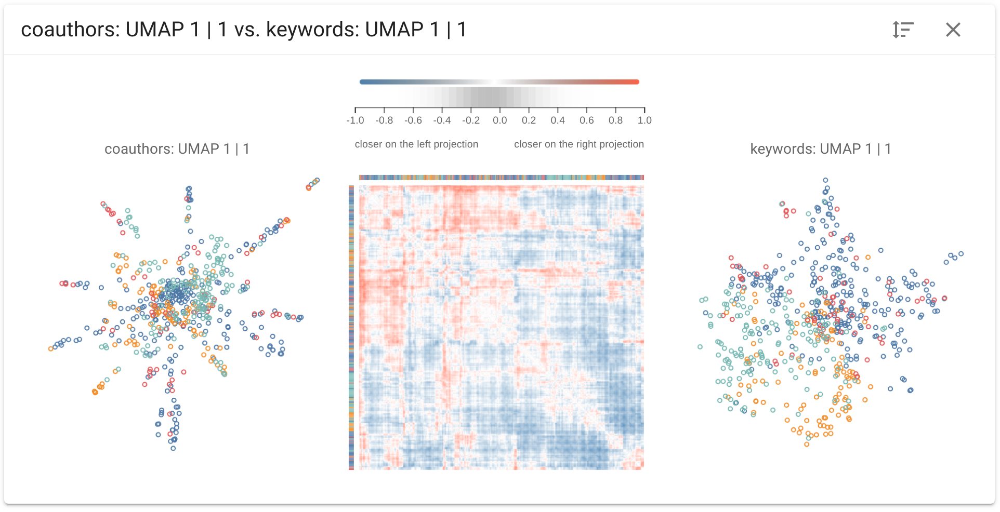

Comparing and Exploring High-Dimensional Data with Dimensionality Reduction Algorithms and Matrix Visualizations

AVI (2020) Full Paper
Authors
Rene Cutura, Michaël Aupetit, Jean-Daniel Fekete, Michael Sedlmair
Materials
Abstract
We propose Compadre, a tool for visual analysis for comparing distances of high-dimensional (HD) data and their low-dimensional projections. At the heart is a matrix visualization to represent the discrepancy between distance matrices, linked side-by-side with 2D scatterplot projections of the data. Using different examples and datasets, we illustrate how this approach fosters (1) evaluating dimensionality reduction techniques w.r.t. how well they project the HD data, (2) comparing them to each other side-by-side, and (3) evaluate important data features through subspace comparison. We also present a case study, in which we analyze IEEE VIS authors from 1990 to 2018, and gain new insights on the relationships between coauthors, citations, and keywords. The coauthors are projected as accurately with UMAP as with t-SNE but the projections show different insights. The structure of the citation subspace is very different from the coauthor subspace. The keyword subspace is noisy yet consistent among the three IEEE VIS sub-conferences.
BibTex
Acknowledgements
This work was supported by the BMVIT ICT of the Future program via the ViSciPub project (no. 867378) and handled by the FFG.